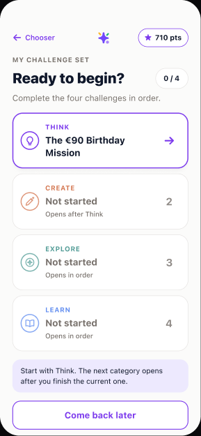
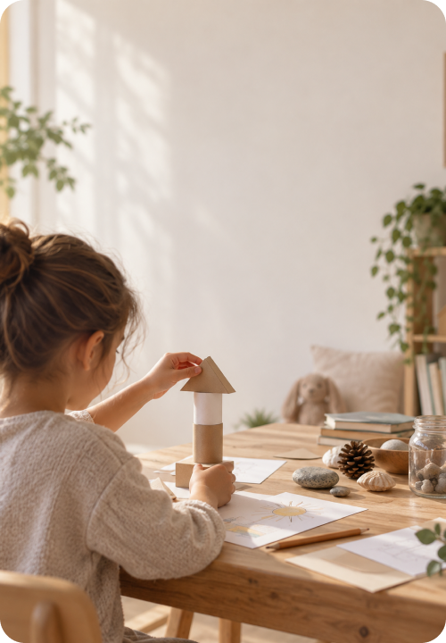

Active learning
Learning research describes experiences that engage children’s thinking, connect with their lives and support interaction around a learning goal.
Read the learning frameworkDabbli gives children hands-on challenges to think, create, explore and learn—with something to show you afterwards.


How Dabbli works
Each set contains four challenges: one to think, one to create, one to explore and one to learn.
With the materials ready, your child can build, draw, explore and test their ideas away from the screen.
They capture their work with photos or a short audio recording, without typing on the phone.
You review the finished set and choose scores. Your child then sees the results and moves on to the next set.
Hints help them get started. Using one never reduces their points.
Growing up with AI
AI is changing how we find information and create. Our response is to make room for children to ask why, try an idea, rethink it and explain what they noticed.
Knowing things matters. So does deciding what to do with that knowledge.
Our approach draws on ideas from active learning, play and thoughtful digital design.
Learning research describes experiences that engage children’s thinking, connect with their lives and support interaction around a learning goal.
Read the learning frameworkHarvard’s activity guide describes age-appropriate games and activities for practising skills such as attention, working memory and self-control.
Explore the activity guideThe American Academy of Pediatrics considers media design, content, family context and what digital use may displace—not just screen minutes.
Read the guidanceThese resources are not studies of Dabbli and do not imply endorsement.
For parents
Review the finished set when you’re ready. You can look through the work together, ask what felt fun or difficult, and notice the effort your child made.
Points make progress visible. Your attention gives the work a place in family life.
No ads. No public profiles. Your child’s work stays on your iPhone—not on Dabbli’s servers.
Parent sign-in uses account data. Optional usage sharing is your choice. Our Privacy Notice explains these and other necessary security and diagnostic records.